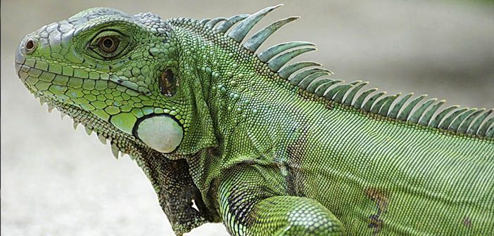
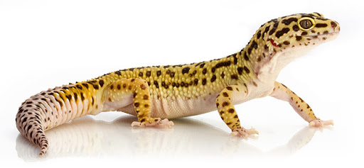
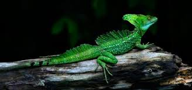

MENÚ CULEBRA CORREDORA DE PETATILLOS IGUANA VERDE TORTUGA CAGUAMA GECKO YUCATECO DE BANDAS TOLOQUE CORONADO
Totalmente inofensiva, habita desde el sur de Texas, Estados Unidos hasta Colombia, en diferentes tipos de bosques, en alturas que van desde el nivel del mar a los 1450 m. Es de hábitos diurnos y se alimenta básicamente de ranas. Es nativa del sur de Texas, México, Guatemala, Belice, El Salvador, Honduras, Nicaragua (incluyendo las islas del Maíz), Costa Rica, Panamá y Colombia. En México se le encuentra a lo largo de la vertiente del Pacífico y del Golfo de México incluyendo la península de Yucatán. La IUCN2019-1 considera a la especie como de preocupación menor.
Características
1.Tiene ojos oscuros, pupilas redondas y lengua bífida rosada. 2.Es de hábitos diurnos y se alimenta básicamente de ranas. 3.Presenta de 22 a 34 dientes maxilares, los posteriores considerablemente más grandes que los anteriores; los dientes mandibulares son desiguales. 4.Alcanza hasta 1,34 m de largo. 5.Es ovípara y se ha documentado que colocan de 4 a 8 huevos por vez, cuyas crías nacen luego de 64 a 68 días.
REGRESAR AL MENÚ

Las iguanas viven en zonas de vegetación espesa y en altura (manglares, selvas, pastizales, riberas de ríos, acahuales...), donde la temperatura media anual es de 27-28 °C y la humedad ambiente es superior al 70%. Son animales fundamentalmente arborícolas, es decir, que en los árboles pasan la mayor parte del tiempo, y lo hacen gracias a sus fuertes garras y su larga cola. Habitan tres ecosistemas diferentes durante su vida. Ellas nacen en la tierra y pasan su tiempo como post-crías en las zonas cercanas a la playa de anidación. Su hábitat es principalmente altas temperaturas y siempre se les puede ver rondando por los árboles y palmeras. Los adultos son quienes hacen vida en las ramas más altas para tener más contacto con la luz, es muy raro verlos caminar por ahí y cuando lo hacen es debido a las lluvias o porque la hembra necesita un lugar seguro para los huevos, mientras que los jóvenes se ubican en zonas medias.
Características
1.Pueden medir hasta 2 metros. 2.Se reproducen por medio de huevos, que son colocados bajo tierra durante el mes de febrero. 3.Alcanzan la madurez sexual a los 16 meses de edad, pero son consideradas adultas a los 36 meses, cuando miden 70 cm de largo. 4.El color verde de su piel les permite confundirse perfectamente con la vegetación que hay en su entorno. 5.Viven principalmente en regiones bastante húmedas, como la selva mexicana y brasileña.
REGRESAR AL MENÚ
Aunque se encuentra principalmente en aguas templadas y, a veces tropicales y sub-tropicales a través del mundo, puede habitar a lo largo de un enorme rango marino de norte a sur. En el hemisferio occidental, sus rangos extremos han sido Groenlandia al norte y Argentina al sur. Sus áreas de alimentación preferidas son estuarios, bahías y aguas someras del talud continental.Habitan tres ecosistemas diferentes durante su vida. Ellas nacen en la tierra y pasan su tiempo como post-crías en las zonas cercanas a la playa de anidación. Más tarde, después de ser neonatos son transportados por las corrientes oceánicas lejos de la costa a aguas más profundas, donde pasan los próximos siete a 12 años, después de lo cual regresan a las zonas costeras y continúan madurando hasta la edad adulta.
Características
1.La vida de una tortuga caguama se estima en hasta 100 años. 2.Los adultos pesan aproximadamente 250 libras con conchas que miden tres pies de largo. 3. Se alimentan de esponjas, medusas, sargazos, pequeños gasterópodos, almejas, cangrejos de herradura y entre otros. 4.El caparazón mide aproximadamente un metro y puede pesar hasta 150 Kilogramos. 5.Anida entre cuatro y siete veces por temporada, pero no anida todos los años, solo vuelve a poner en intervalos de dos años o mas.
REGRESAR AL MENÚ

La especie es nativa de México, Belice, Honduras, Guatemala y El Salvador. En México, se distribuye desde el sur de Nayarit en la vertiente del Pacífico y desde el sur de Veracruz por la vertiente del Atlántico, hacia el sur-sureste del país incluyendo la Península de Yucatán. La especie habita en varios tipos de vegetación como son la selva alta, selva baja y pastizales.Acostumbra vivir en cuevas, oquedades, construcciones viejas, áreas rocosas y grutas. Prefiere climas cálidos a muy cálidos, húmedos y subhúmedos y semicálidos húmedos.
Características
1.Es de brazos largos, delgados y delicados que terminan en uñas retráctiles. 2.Tiene ojos grandes, pupila elíptica y párpados móviles. Escamas de cabeza y cuerpo granulares. 3.En su longitud hocico-cloaca mide en promedio 10.8 cm. 4.Este gecko nocturno y terrestre se alimenta de invertebrados, como arañas, grillos y escarabajos; no es venenoso. 5.Su cola puede regenerarse pero pierde su bandeado original.
REGRESAR AL MENÚ

El hábitat de la especie varia de acuerdo con los tipos de vegetación que presente el área. En general acostumbra esconderse entre las ramas de los árboles, en los troncos o arbustos con los que se camuflajea. Con frecuencia se encuentra perchando en lianas o troncos cercanos al suelo. Se puede estimar que la distribución histórica comprendía desde en centro del país hacia el sur por Veracruz y hasta la Península de Yucatán. Aunque no se conoce exactamente a donde llegaban sus límites.
Características
1.La longitud hocico-cloaca que suele alcanzar es entre 120 y 130 mm, con un récord máximo de 190 mm. 2.Estos lagartos son usualmente verdes pero pueden cambiar de color rápidamente de verde a café. 3.Es un organismo ovíparo, carnívoro, ectotermo. 4.Se alimenta de una variedad de invertebrados, principalmente insectos. 5.Es mayormente diurno, aunque también se ha reportado activo durante las noches.
REGRESAR AL MENÚ